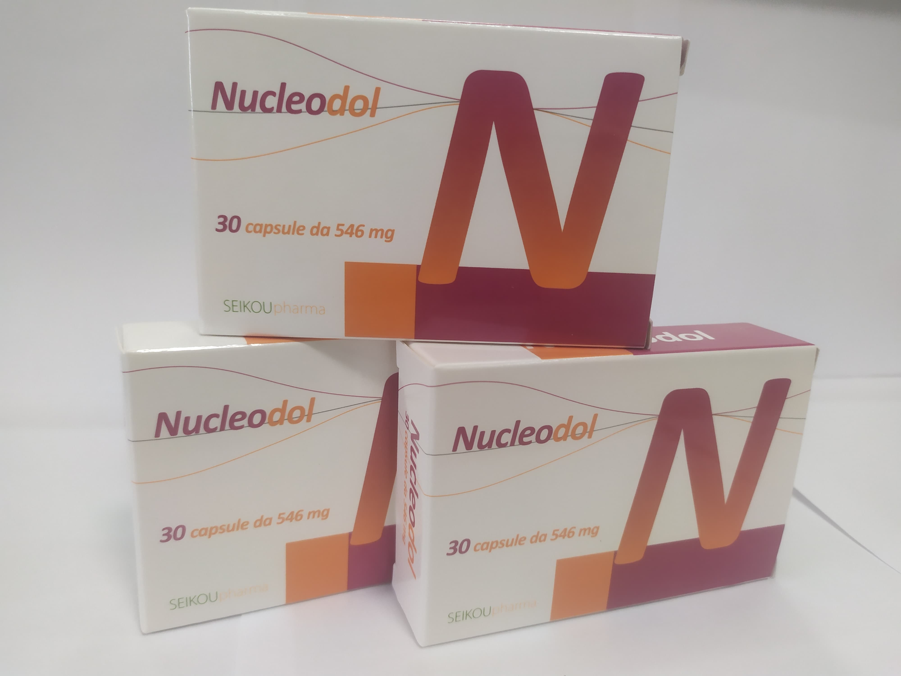

Контактна інформація:
Ціна: 1200 грн/уп.
В наявності
Виробник: Італія
Ціна: 1200 грн/уп.
В наявності
Саме в FarmItal ви можете купити капсули Nucleodol, нуклеодол в Україні, Гарантовано Якісний!
Доставка Nucleodol здійснюється транспортними компаніями, терміни виконання замовлення обумовлюються менеджером Фармітал. Ви можете замовити Нуклеодол капсули у містах: Одеса, Херсон, Чернігів, Сєверодонецьк, Бердянськ, Бровари, Дніпро, Вінниця, Київ, Слов'янськ, Полтава, Краматорськ, Біла Церква, Кам'янське, Маріуполь, Чернівці, Олександрія, Кам'янець-Подільський, Львів, Запоріжжя, Кропивницький, Житомир, Івано-Франківськ, Суми, Черкаси, Костянтинівка, Мелітополь, Кривий Ріг, Рівне, Луцьк, Нікополь, Павлоград, Ужгород, Кременчук, Лисичанськ, Хмельницький, Тернопіль, Харків, Миколаїв, а також в інших населених пунктах України.
Капсули - 30 капсул по 546 мг
В результаті дослідження специфічних потреб при захворюваннях периферичної нервової системи лабораторії Fisiopharma розробили Nucleodol, продукт з ексклюзивною формулою, оскільки на ринку немає іншої харчової добавки, яка містила б такі ж компоненти.
Поєднання в одному продукті різних напрямків дії, які можуть найбільше сприяти змінам периферичної нервової системи від нутрицевтика:
Нуклеотиди CMP + уридин: компоненти, традиційно пов'язані з відновленням і дозріванням аксонів нервової тканини, оскільки вони сприяють регенерації мієлінової оболонки, покращують провідність нервових імпульсів і трофіку м'язів.
α-ліпоєва кислота + L – карнітин: ця комбінація пов’язана зі зменшенням вмісту речовини Р у периферичних нервах і з поглинанням вільних радикалів для захисту нервових клітин від перекисного окислення. Вони мають антиоксидантну поживну дію зі здатністю долати гематоенцефалічний бар’єр. Сприяння запальним і больовим процесам, які характеризують певні процеси периферичної нейропатії. Так як вони мають протизапальну і болезаспокійливу дію. Вони покращують больові параметри і збільшують швидкість проходження нервового імпульсу.
Комплекс вітамінів B + фолієва кислота + цинк: Ці поживні речовини необхідні в процесі відновлення процесів, пов'язаних з периферичними невропатіями. Кілька досліджень пов'язують нестачу цих вітамінів з посиленням симптомів цієї хронічної патології.
Лікування та терапія різних форм невропатій.
Кожні 2 капсули Nucleodol містять такі активні інгредієнти:
Нуклеодол підходить для діабетиків, целіакії та непереносимості лактози
Зберігати у недоступному для дітей місці. Не потребує особливих умов зберігання.